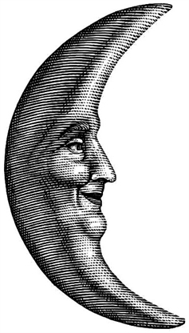

SOMMEIL
"Si le sommeil ne séparait pas les couples, il y aurait deux fois plus de divorces." Philippe BOUVARD

Le sommeil, car il est pluriforme, mérite une attention certaine. Il fait partie du fonctionnement biologique de l’homme qui lui permet de se maintenir en bonne santé. Cependant, il reste un évènement singulier et sensible. Il est vécu, en fonction des évènements de vie, totalement différemment d’un jour à l’autre : il se dérègle, il se fractionne, il n’est pas, il est trop. Tout en étant le support de la rêverie, il peut faire peur, être appréhendé et n’amène aucune certitude que la bonne forme sera présente à son réveil. Quand il n’est pas présent, c’est une période de doute, de questionnement, de rumination, d’angoisse, peut être de solitude. Si le sommeil est un besoin vital, il peut devenir un symptôme, signe de mauvais fonctionnement biologique ou d’un état psychologique fragile.
On parle d’insomnie soit lors que l’on a une difficulté à s’endormir à l’heure du coucher, soit lorsque l’on fait des réveils nocturnes fréquents ou prolongés, soit enfin quand on se réveille prématurément le matin avec une incapacité à retrouver le sommeil. Une personne peut souffrir d’un mélange de ces symptômes, ou encore peut changer avec le temps de symptômes.
Il existe deux types d’insomnie selon la classification internationale des troubles du sommeil. La première s’appelle insomnie aiguë transitoire, c’est-à-dire qu’elle se répète au moins trois nuits par semaine, dure moins d’un mois et ne va pas perdurer dans le temps. Elle consiste en une difficulté à s’endormir le soir (temps d’endormissement supérieur à 20 minutes) et/ou des réveils nocturnes et/ou des réveils plus précoces le matin. En plus des symptômes nocturnes, on retrouve des symptômes diurnes, c’est-à-dire qui surviennent la journée, comme une fatigue ou une somnolence excessive. La perturbation de sommeil survient malgré une opportunité et des circonstances de sommeil adéquates. Les difficultés de sommeil ne doivent pas être en lien avec la prise d’une substance toxique. La seconde se nomme insomnie chronique, elle reprend les mêmes critères que l’insomnie aiguë sauf qu’elle dure plus de trois mois. Donc, prendre plus de 20 minutes pour s’endormir, ou passer plus de 30 minutes éveillé au milieu de la nuit, avec une durée de sommeil inférieur à 6 heures 30 par nuit représente un possible problème d’insomnie.
Les troubles du sommeil comprennent les parasomnies. Ce sont des événements indésirables qui surviennent pendant le sommeil et qui impliquent souvent des comportements complexes et orientés vers un but. Elles se manifestent après l’endormissement, pendant le sommeil ou au moment de l’éveil. Les parasomnies sont une manifestation des états dissociés de sommeil, qui sont un mélange ou une superposition de l’état de veille et du sommeil profond non paradoxal. De façon générale, l’individu n’a pas conscience de ces comportements et ne s’en souvient pas au réveil (sauf pour les cauchemars).
D'une première compréhension, Le sommeil est soumis à des contraintes horaires. Le cerveau suit un rythme interne qui prévoit une fenêtre biologique spécifique pour le sommeil. En dehors de cette fenêtre, il devient plus compliqué de s'endormir et plus facile de voir son sommeil perturbé. Ce sont les rythmes circadiens qui déterminent ce rythme interne. le sujet peut ss coucher à une heure raisonnable alors que son cerveau est toujours en « mode jour ». Ce que de nombreuses personnes qualifient d'insomnie est en fait souvent un sommeil mal synchronisé : l'horloge indique qu'il est tard mais le corps n'est pas encore entré dans sa nuit biologique.
Un phénomène contemporain courant est le jet-lag social : se réveiller tôt la semaine, plus tard le week-end, puis recommencer ce cycle. D'un point de vue biologique, cela revient à traverser des fuseaux horaires tous les deux ou trois jours. L'horloge interne ne parvient jamais à se stabiliser. De nombreuses personnes ne manquent pas de sommeil, elles essaient de dormir alors que leur horloge biologique est encore déréglée. À long terme, ce dérèglement a été associé à des risques cardiométaboliques accrus.
Puis il y a les perturbations dans le sommeil comme les cauchemars qui interviennent en général en fin de nuit, quand le sommeil paradoxal présente la plus grande amplitude. Les accès sont en général causés par un événement traumatisant (accident, agression, forte anxiété…), mais peuvent aussi être causés par un trouble de la personnalité ou encore un sevrage de drogue. Comme toutes les parasomnies, les cauchemars surtout répétitifs sont beaucoup plus fréquents pendant l’enfance, même s’ils perdurent parfois chez l’adulte surtout chez les personnes très sensibles aux évènements. Ces phénomènes sont très différents des terreurs nocturnes. La personne se réveille, par exemple, en gardant un souvenir intense de son cauchemar et a du mal à se rendormir. Elle est capable d’identifier la cause de ce qu’elle ressent. C'est un évènement émotionnellement intense.
On parle d’insomnie soit lors que l’on a une difficulté à s’endormir à l’heure du coucher, soit lorsque l’on fait des réveils nocturnes fréquents ou prolongés, soit enfin quand on se réveille prématurément le matin avec une incapacité à retrouver le sommeil. Une personne peut souffrir d’un mélange de ces symptômes, ou encore peut changer avec le temps de symptômes.
Il existe deux types d’insomnie selon la classification internationale des troubles du sommeil. La première s’appelle insomnie aiguë transitoire, c’est-à-dire qu’elle se répète au moins trois nuits par semaine, dure moins d’un mois et ne va pas perdurer dans le temps. Elle consiste en une difficulté à s’endormir le soir (temps d’endormissement supérieur à 20 minutes) et/ou des réveils nocturnes et/ou des réveils plus précoces le matin. En plus des symptômes nocturnes, on retrouve des symptômes diurnes, c’est-à-dire qui surviennent la journée, comme une fatigue ou une somnolence excessive. La perturbation de sommeil survient malgré une opportunité et des circonstances de sommeil adéquates. Les difficultés de sommeil ne doivent pas être en lien avec la prise d’une substance toxique. La seconde se nomme insomnie chronique, elle reprend les mêmes critères que l’insomnie aiguë sauf qu’elle dure plus de trois mois. Donc, prendre plus de 20 minutes pour s’endormir, ou passer plus de 30 minutes éveillé au milieu de la nuit, avec une durée de sommeil inférieur à 6 heures 30 par nuit représente un possible problème d’insomnie.
Les troubles du sommeil comprennent les parasomnies. Ce sont des événements indésirables qui surviennent pendant le sommeil et qui impliquent souvent des comportements complexes et orientés vers un but. Elles se manifestent après l’endormissement, pendant le sommeil ou au moment de l’éveil. Les parasomnies sont une manifestation des états dissociés de sommeil, qui sont un mélange ou une superposition de l’état de veille et du sommeil profond non paradoxal. De façon générale, l’individu n’a pas conscience de ces comportements et ne s’en souvient pas au réveil (sauf pour les cauchemars).
D'une première compréhension, Le sommeil est soumis à des contraintes horaires. Le cerveau suit un rythme interne qui prévoit une fenêtre biologique spécifique pour le sommeil. En dehors de cette fenêtre, il devient plus compliqué de s'endormir et plus facile de voir son sommeil perturbé. Ce sont les rythmes circadiens qui déterminent ce rythme interne. le sujet peut ss coucher à une heure raisonnable alors que son cerveau est toujours en « mode jour ». Ce que de nombreuses personnes qualifient d'insomnie est en fait souvent un sommeil mal synchronisé : l'horloge indique qu'il est tard mais le corps n'est pas encore entré dans sa nuit biologique.
Un phénomène contemporain courant est le jet-lag social : se réveiller tôt la semaine, plus tard le week-end, puis recommencer ce cycle. D'un point de vue biologique, cela revient à traverser des fuseaux horaires tous les deux ou trois jours. L'horloge interne ne parvient jamais à se stabiliser. De nombreuses personnes ne manquent pas de sommeil, elles essaient de dormir alors que leur horloge biologique est encore déréglée. À long terme, ce dérèglement a été associé à des risques cardiométaboliques accrus.
Puis il y a les perturbations dans le sommeil comme les cauchemars qui interviennent en général en fin de nuit, quand le sommeil paradoxal présente la plus grande amplitude. Les accès sont en général causés par un événement traumatisant (accident, agression, forte anxiété…), mais peuvent aussi être causés par un trouble de la personnalité ou encore un sevrage de drogue. Comme toutes les parasomnies, les cauchemars surtout répétitifs sont beaucoup plus fréquents pendant l’enfance, même s’ils perdurent parfois chez l’adulte surtout chez les personnes très sensibles aux évènements. Ces phénomènes sont très différents des terreurs nocturnes. La personne se réveille, par exemple, en gardant un souvenir intense de son cauchemar et a du mal à se rendormir. Elle est capable d’identifier la cause de ce qu’elle ressent. C'est un évènement émotionnellement intense.
Egalement, le bruxisme qui est caractérisé par un grincement des dents pendant le sommeil lent léger. Il s’agit d’une manifestation banale chez l’enfant. Les causes du bruxisme sont mal connues, mais on peut l’expliquer par un excès de "stress". Il est difficile de diagnostiquer un bruxisme si l’entourage ne s’en aperçoit pas, mais des migraines ou des douleurs à la mâchoire en sont les principaux signaux. Un diagnostic définitif ne pourra être posé qu’avec des tests nocturnes. S’il est d’origine anxieux, on pourra bien sûr l’atténuer considérablement en diminuant l’anxiété.
Plus rare, l'hyperphagie nocturne est caractérisé par l'ingestion de plus de 25% de l'apport calorique quotidien après le repas du soir ou par l'alimentation pendant la nuit 2 fois ou plus par semaine. Les personnes atteintes ont souvent l'impression qu'il leur sera impossible de trouver le sommeil si elles ne mangent pas. Plusieurs d'entre elles ont des troubles du sommeil et n'ont pas faim le matin, ce qui peut se prolonger jusqu'en milieu de journée. Le fait de se lever la nuit peut avoir une origine physique, comme un problème métabolique. Mais l'hyperphagie nocturne peut révéler un problème psychologique. Et en effet, des troubles de l'humeur, une dépression, un stress post-traumatique ou encore une grande anxiété peuvent se traduire par des accès de boulimie nocturne. Ces personnes tendent, donc, à se réfugier dans la nourriture. Cette boulimie nocturne est également récurrente chez certains insomniaques.
Le somnambulisme est un état entre l’éveil et le sommeil. Il conjugue des caractéristiques propres à l’éveil, c’est-à-dire, l’activité des membres responsables du mouvement du corps, et des caractéristiques propres au sommeil, c’est-à-dire, l’inactivité de la conscience. En clair, les somnambules exercent des mouvements et accomplissent des actes, mais ils n’ont pas conscience de ce qu’ils font. La première des conséquences du somnambulisme est la fatigue induite par ces nuits marginales. En effet, le somnambule dort moins bien que les dormeurs lambda, étant donné que ses nuits sont agitées.
Aussi, la somniloquie est le fait de parler pendant le sommeil. Ces accès peuvent intervenir en sommeil léger ou en sommeil paradoxal, même si le discours est beaucoup plus élaboré pendant la phase de sommeil paradoxal. La somniloquie peut être isolée ou associée à d’autres parasomnies. Ce phénomène est généralement causé par le stress, la fièvre ou les changements brutaux dans la vie. La personne ne garde aucun souvenir de son discours.
Encore dans les parasmonies, le trouble dissociatif lié au sommeil, l'énurésie, la catathrénie, le syndrome de la tête qui explose, les hallucinations liées au sommeil (hallucinations hypnagogiques, hallucinations hypnopompiques) ou encore le trouble du comportement sexuel lié au sommeil ou sexsomnie.
Les troubles du sommeil ont toujours un retentissement sur la qualité de vie en journée, puis sur la santé : fatigue, irritabilité, troubles de l’humeur, de la mémoire ou de la concentration, etc. Derrière les troubles du sommeil, des éléments hors du champ de la conscience, inconnus de la réflexion ou de la logique sont souvent des déclencheurs. Occasionnels ou transitoires, les troubles du sommeil sont liés à un événement particulier ou à un environnement perturbant. Chroniques et évoluant sur des mois voire des années, leurs causes sont alors le plus souvent psychologiques.
Si l’anxiété, le stress ou la dépression sont à l’origine de la plupart des insomnies, d’autres sont dues à des erreurs d’hygiène de vie ou des causes environnementales : un rythme de vie irrégulier ou un environnement bruyant, par exemple, déstructurent le sommeil.
Il se passe donc une pléthore d’évènements autour de lui pour qu’il soit (ou pas). En hypnose, il peut arriver qu’une partie du travail porte sur d’autres sujets, qui pourraient impacter le sommeil comme le stress, les émotions, l’anxiété, etc. C’est alors ces changements que vous pourrez remarquer dans d’autres domaines qui réguleront naturellement votre sommeil.
Plus rare, l'hyperphagie nocturne est caractérisé par l'ingestion de plus de 25% de l'apport calorique quotidien après le repas du soir ou par l'alimentation pendant la nuit 2 fois ou plus par semaine. Les personnes atteintes ont souvent l'impression qu'il leur sera impossible de trouver le sommeil si elles ne mangent pas. Plusieurs d'entre elles ont des troubles du sommeil et n'ont pas faim le matin, ce qui peut se prolonger jusqu'en milieu de journée. Le fait de se lever la nuit peut avoir une origine physique, comme un problème métabolique. Mais l'hyperphagie nocturne peut révéler un problème psychologique. Et en effet, des troubles de l'humeur, une dépression, un stress post-traumatique ou encore une grande anxiété peuvent se traduire par des accès de boulimie nocturne. Ces personnes tendent, donc, à se réfugier dans la nourriture. Cette boulimie nocturne est également récurrente chez certains insomniaques.
Le somnambulisme est un état entre l’éveil et le sommeil. Il conjugue des caractéristiques propres à l’éveil, c’est-à-dire, l’activité des membres responsables du mouvement du corps, et des caractéristiques propres au sommeil, c’est-à-dire, l’inactivité de la conscience. En clair, les somnambules exercent des mouvements et accomplissent des actes, mais ils n’ont pas conscience de ce qu’ils font. La première des conséquences du somnambulisme est la fatigue induite par ces nuits marginales. En effet, le somnambule dort moins bien que les dormeurs lambda, étant donné que ses nuits sont agitées.
Aussi, la somniloquie est le fait de parler pendant le sommeil. Ces accès peuvent intervenir en sommeil léger ou en sommeil paradoxal, même si le discours est beaucoup plus élaboré pendant la phase de sommeil paradoxal. La somniloquie peut être isolée ou associée à d’autres parasomnies. Ce phénomène est généralement causé par le stress, la fièvre ou les changements brutaux dans la vie. La personne ne garde aucun souvenir de son discours.
Encore dans les parasmonies, le trouble dissociatif lié au sommeil, l'énurésie, la catathrénie, le syndrome de la tête qui explose, les hallucinations liées au sommeil (hallucinations hypnagogiques, hallucinations hypnopompiques) ou encore le trouble du comportement sexuel lié au sommeil ou sexsomnie.
Les troubles du sommeil ont toujours un retentissement sur la qualité de vie en journée, puis sur la santé : fatigue, irritabilité, troubles de l’humeur, de la mémoire ou de la concentration, etc. Derrière les troubles du sommeil, des éléments hors du champ de la conscience, inconnus de la réflexion ou de la logique sont souvent des déclencheurs. Occasionnels ou transitoires, les troubles du sommeil sont liés à un événement particulier ou à un environnement perturbant. Chroniques et évoluant sur des mois voire des années, leurs causes sont alors le plus souvent psychologiques.
Si l’anxiété, le stress ou la dépression sont à l’origine de la plupart des insomnies, d’autres sont dues à des erreurs d’hygiène de vie ou des causes environnementales : un rythme de vie irrégulier ou un environnement bruyant, par exemple, déstructurent le sommeil.
Il se passe donc une pléthore d’évènements autour de lui pour qu’il soit (ou pas). En hypnose, il peut arriver qu’une partie du travail porte sur d’autres sujets, qui pourraient impacter le sommeil comme le stress, les émotions, l’anxiété, etc. C’est alors ces changements que vous pourrez remarquer dans d’autres domaines qui réguleront naturellement votre sommeil.
EN RELATION


TOXICOMANIE
SYMPTÔME
A-BANDON
ANXIETE
THYMIE
LACHER
(humeur)